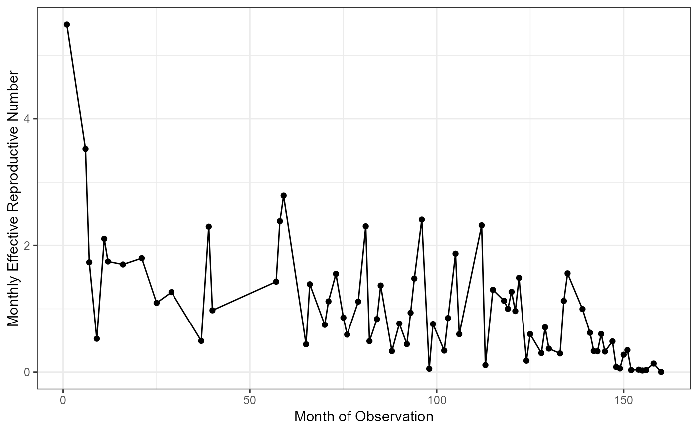

The function plotRt creates a plot of the effective reproductive number (Rt) over
the course of the outbreak. Using various options, the plot can include the overall average
Rt value for the outbreak and the confidence intervals.
plotRt( rData, includeRtAvg = FALSE, includeRtCI = FALSE, includeRtAvgCI = FALSE )
Arguments
| rData | A list that is the output of |
|---|---|
| includeRtAvg | A logical. If TRUE, a horizontal line will be drawn for the average
Rt value over |
| includeRtCI | A logical. If TRUE, error bars will be added to the Rt values representing the bootstrap confidence intervals. |
| includeRtAvgCI | A logical. If TRUE, horizontal lines will be drawn around the Rt average line representing the bootstrap confidence interval. |
Details
The main input rData should be the output of estimateRt with the
time-level reproductive numbers, overall average, range used to calculate that average,
and time frame.
The options includeRtCI and includeRtAvgCI add confidence interval bounds
to the plot. If set to true, rData should be from a call of estimateRt
with bootSamples > 0 so that confidence intervals are available.
If includeRtAvgCI is set to TRUE, a line for the point estimate of the average
Rt value will be drawn even if includeRtAvg is set to FALSE.
See also
Examples
## Use the nbResults data frame included in the package which has the results # of the nbProbabilities() function on a TB-like outbreak. ## Getting initial estimates of the reproductive number # (ithout specifying nbResults and without confidence intervals) rInitial <- estimateR(nbResults, dateVar = "infectionDate", indIDVar = "individualID", pVar = "pScaled", timeFrame = "months")#> [1] "Please choose the stable portion of the outbreak to calculate the average Rt"## Finding the stable portion of the outbreak for rangeForAvg using the plot plotRt(rInitial)cut1 <- 25 cut2 <- 125 ## Finding the final reproductive number estimates with confidence intervals # NOTE should run with bootSamples > 10. rFinal <- estimateR(nbResults, dateVar = "infectionDate", indIDVar = "individualID", pVar = "pScaled", timeFrame = "months", rangeForAvg = c(cut1, cut2), bootSamples = 10, alpha = 0.05)#> | | | 0% | |======= | 10% | |============== | 20% | |===================== | 30% | |============================ | 40% | |=================================== | 50% | |========================================== | 60% | |================================================= | 70% | |======================================================== | 80% | |=============================================================== | 90% | |======================================================================| 100%## Ploting the final result plotRt(rFinal, includeRtAvg = TRUE, includeRtCI = TRUE, includeRtAvgCI = TRUE)